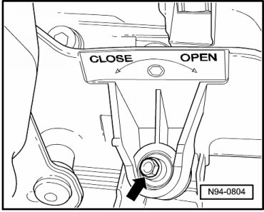
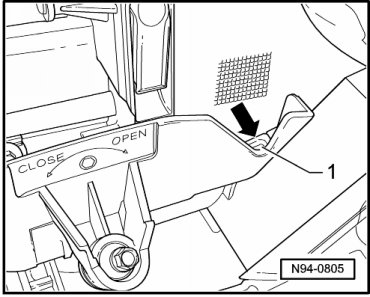
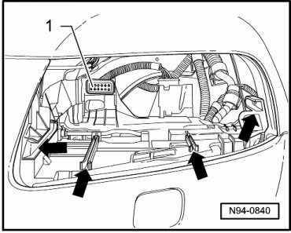

Headlamps, through 11.06
Headlamps, through 11.06
• It is not necessary to disconnect battery.
• Illustrations depict removal and installation of left headlamp.
Removing
- Switch off ignition, switch off all electrical consumers and remove ignition key.
- Press against headlamp.
- Turn locking bolt - arrow - in - direction of arrow Open (sticker) - until resistance is felt.

• Do not use force to turn bolt further, otherwise the locking mechanism will be destroyed.
Headlamp is pushed toward front.
- Pull headlamp out of cut-out on body until resistance is felt.
- Hold locking clip - 1 - pressed - arrow - and remove headlamp from cut-out on body.

Installing
• Guides - arrows - must be free of dirt.

- Check connector - 1 - in headlamp mount for proper fitting before inserting headlamp into guides.
- Set headlamp into guides - arrows -.
- Slide headlamp into cut-out on body.
• A significant "clicking" must be audible. Securing clip engages.
- Turn locking bolt - arrow - in - direction of arrow Close (sticker) - until resistance is felt.
- Press lightly against headlamp and turn further in - direction of arrow Close (sticker) -.
Securing bracket must engage audibly.
• Do not use force to turn bolt further, otherwise the locking mechanism will be destroyed.
- Check installation position of headlamp for uniform gap dimensions.
If headlamp has an uneven gap dimension to the body, installation position must be corrected --> [ Headlamps Correcting Installation Position ] Procedures.
- Check headlamp for function.
- Check and adjust headlamp aim if necessary.